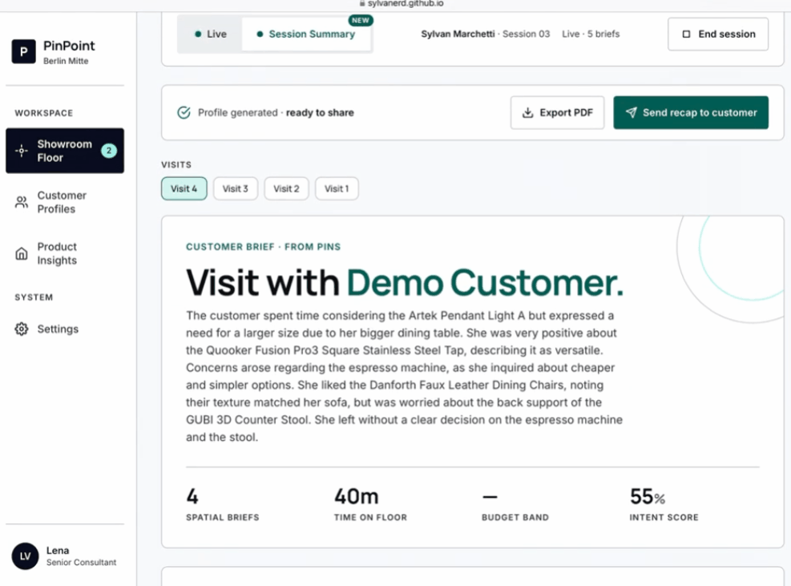
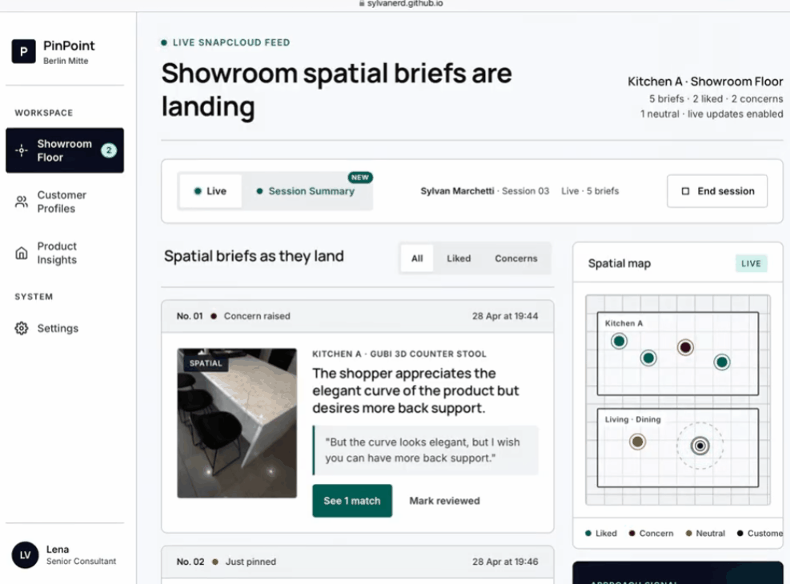
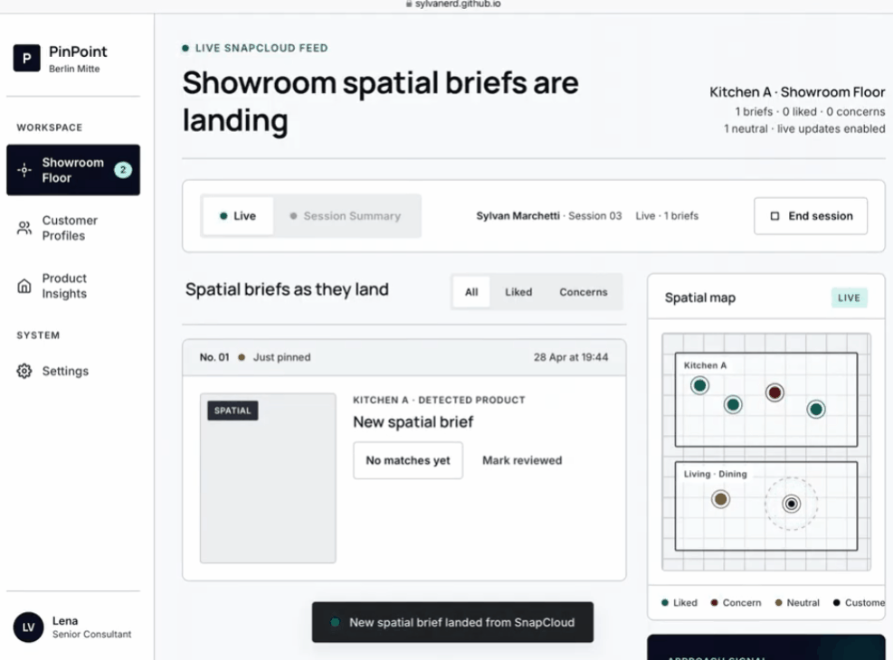
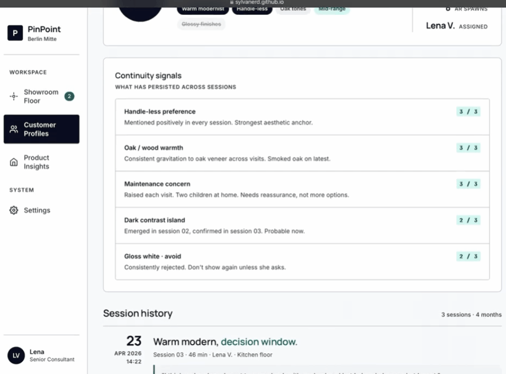

PinPoint is a multi-platform spatial briefing system for showroom retail, built on Snap Spectacles, Snap Cloud, and a companion web portal. It captures what customers see and say, anchors those reactions to the exact products that triggered them, and delivers a structured, retrievable preference profile that turns cold introductions into informed consultations.
In other words, the showroom stops being a place customers forget and starts being one that remembers them.
Challenge Context
Built for XRCC 2026, the world's largest independent XR & AI hackathon. The brief asked how Spatial AI on Spectacles could solve real problems in physical retail — where intent is spatial, but communication is verbal.
Problem
Showroom customers form rich, spatially grounded preferences while browsing, but most of that context is lost the moment it has to become a conversation. Intent is spatial; communication is verbal. Only a fraction of what they actually felt survives the translation.
Worse, if a salesperson engages mid-browse, the customer has to start over from scratch, and the salesperson has to hold every detail in their head. The result is cognitive overload and indecision — 40 to 60% of qualified opportunities end in "no decision." Salespeople spend 15+ minutes reconstructing context the customer already formed, and when staff turn over or the customer returns later, all of it is gone.
Concept
PinPoint closes that gap by capturing customer intent directly in the showroom experience.
Customers pin their reactions to real products as they browse, AI organizes those moments into a clear preference profile, and salespeople walk in already knowing what to show, what to skip, and what the customer actually cares about.
A companion web dashboard lets salespeople watch pins arrive in near real time, push suggestions back into AR, and rely on persisted profiles when customers return.
Experience Flow
1. Pin, speak, and crop
Customers look at a product through Spectacles, spawn a spatial note, and speak their reaction. The system bundles image capture, voice recording, transcript, and a world-locked anchor into one brief pinned to the exact product.

2. AI preference extraction
Each brief is processed in realtime by Snap Cloud edge functions. Voice notes are transcribed, the target product is detected via Gemini, and intent is extracted — style, color, material, function, budget — then matched against the product catalog.

3. Live salesperson dashboard
A live web dashboard renders each pin as a card with image thumbnail, transcript, AI tags, summary, and pre-matched product recommendations as they arrive.

4. Two-way AR recommendations
Salespeople push product suggestions from the dashboard directly into the customer's Spectacles view in real time. The dashboard becomes a two-way channel, not a passive feed.
5. Cross-session memory
Profiles persist across visits and staff turnover via Snap Cloud. Returning customers' full spatial history loads instantly, with notes pinned exactly where they left them.

6. Session recap
Every visit ends with a full recap: stats, saved images, AI summary, and one-tap email to the customer. For the business, every session feeds catalog intelligence and intent data for smarter product decisions.
Business Value
Clearer intent on the floor, quieter tooling — so retailers can focus on outcomes.
Reduces customer overwhelm and decision fatigue
Lowers abandonment rates
Increases sales velocity
Improves conversion rates
Enhances the overall customer experience
What I Built
My main focus was connecting the Spectacles experience to a structured backend and companion web system.
I worked on:
Early concept and product direction for the three-surface system
Designing Snap Cloud data schema and edge function architecture
AI and service integration for transcription, detection, and preference extraction
Lens-to-backend integration through Snap Cloud and Remote Service Gateway
Building the companion web dashboard with realtime backend wiring
This role helped bridge the live AR capture moment and the salesperson-facing intelligence layer: Spectacles create the spatial note, while the web portal makes that intent actionable and persistent.
System Design
PinPoint is a three-surface system with one backend connecting two frontends — designed so AR processing stays on Spectacles and everything else runs in the cloud, keeping the glasses responsive.
System Flow
Pin Creation → Voice Capture → Snap Cloud Processing → AI Preference Extraction → Dashboard Sync → AR Recommendations
┌────────────────────┐ ┌──────────────────┐ ┌────────────────────┐
│ Snap Spectacles │◄─────►│ Snap Cloud │◄─────►│ Web portal │
│ (Customer AR app) │ │ (Backend) │ │ (Sales staff) │
└────────────────────┘ └──────────────────┘ └────────────────────┘
pin creation 8 data tables live dashboard
voice capture 5 edge functions realtime sync
spatial anchors product detection AI AR recommendations
AR recommendations catalog matching session recap
crop realtime sync profiles & insights
Spectacles (Lens Studio)
Built in Lens Studio. Handles image capture via the Camera Module, voice recording and transcription via the Remote Service Gateway, and pin creation as world-anchored placements via the Spatial Anchors API. The Spectacles Interaction Kit provides hand interactors and the cursor for targeting products.
Snap Cloud
The intelligence layer. It uses 8 data tables to manage sessions, pins, products, visit summaries, and recommendations, with 5 edge functions powering object detection, AI summaries, preference extraction, catalog matching, and AR product recommendations.
Web portal
Built in HTML, connected to Snap Cloud Realtime. Renders each spatial note as a card with image thumbnail, transcript, AI summary, intent tags, and recommended products as they arrive. Salespeople can trigger pushes back to the Spectacles view from this surface.
The companion web portal extends PinPoint beyond the moment of pinning.
While Spectacles capture spatial reactions in the showroom, the portal gives salespeople a live view of customer intent — each pin arrives as a card with transcript, AI tags, and matched products. Profiles aggregate across sessions so returning customers are remembered even when staff change.
The dashboard is also a two-way channel: salespeople can push product suggestions directly back into the customer's AR view, turning a passive feed into an active consultation tool.